すべてはひとつのビットから
1 bit
1946年 · CRTを使った記憶実験
1 bit は、0 と 1 のどちらか一つを表します。1946年、ウィリアムズはブラウン管の画面に電荷を残し、1 bitを記憶する実験を行いました。
8 bit で 1 byte
1 B（8 bit）
単位の定義
8ビットをひとまとまりにすると1バイトです。例えば、「あ」の1文字はUTF-8で3バイト。文字を保存するときの大きさは、文字と符号化の方式で決まります。
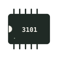
Intelの最初のメモリ
8 B／チップ
1969年4月 · Intel 3101発売
Intelが最初に売り出した製品は、64 bitのSRAMでした。4 bitのデータを16組記憶し、電源を切ると中身は失われます。
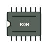
半導体に固定した32バイト
32 B／チップ
1965年 · Sylvaniaの初期半導体ROM
Sylvaniaが製作した256 bitの初期の半導体ROM。読み出し専用のデータをチップに組み込む方式です。初期の半導体ROMには、その後に登場したMOS方式など複数の系譜があります。
穴で読む80文字
80 B相当／カード1枚
1928年 · IBMの80欄形式
IBMのパンチカードは、縦に並ぶ穴の組み合わせで、1欄に1文字、カード1枚で80文字を表しました。1890年の米国国勢調査にも、別形式のパンチカードが使われています。
ブラウン管が主記憶だった
128 B／主記憶
1948年 · Manchester Babyがプログラムを実行
Babyはブラウン管に32 bitの語を32個記憶できました。同じ1,024 bitでも、1953年の磁気コアはコア面1枚、1970年のIntel 1103はDRAMチップ1個。コアは電源を切っても磁化を保ち、DRAMは定期的な再書き込みを必要とします。
窓から光を当てて消すROM
256 B／チップ
1971年 · Intel 1702発表
2,048 bitを記憶するIntel 1702には、紫外線を通す窓がありました。書き込んだ内容を紫外線で消去し、プログラムを入れ直せます。後のEEPROMでは、消去も電気的に行えるようになります。
月へ行ったコアロープROM
69.12 KB／ROM
1966年 · 設計資料／1969年 · 月着陸で使用
アポロ誘導コンピューターの固定メモリでは、磁気コアを通る線の配線でプログラムを表しました。Block IIのROMには36,864語を記憶できました。
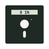
最初期のフロッピー
80 KB／8インチディスク
1971年 · IBM 23FD／1976年 · Shugart SA400
最初期のIBM 23FDは読み出し専用の8インチフロッピーで、装置にデータを読み込ませるために使われました。後に登場した5.25インチのSA400は、約89.6 KBを収めました。
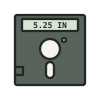
PCで使われたフロッピー
360 KiB／両面
1981年 · ECMA-70初版、Sony 3.5型発売／1984年 · Mac採用
PC向けの5.25インチフロッピーには、両面で360 KiBを収める形式がありました。国内の2Dは320 KiB、Sonyの初期3.5型は322.5 KB、初期Macは400 KiBでした。
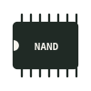
初代NANDフラッシュ
512 KiB／チップ
1987年 · 東芝が研究発表／1991年 · 製品化
東芝が製品化した初代NANDフラッシュの公称容量は4 Mbitでした。電源を切ってもデータが残り、まとめて読み書きする用途に向きます。読み出しの自由度を重視するNORとは用途が分かれ、のちにメモリーカードやSSDの土台になりました。
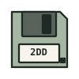
2DDのフロッピー
720 KiB／両面
1985年 · ECMA-100初版／1986年 · Macintosh Plus発売
両面倍密度の3.5型フロッピーでは、PC向けの720 KiBが一つの代表例。国内の640 KiB形式やMacの800 KiB形式もあり、見た目が同じでもドライブや書式によって読み書きできる形式が変わります。
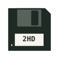
2HDのフロッピー
1,440 KiB／両面
1984年 · PC/ATで高密度形式採用／1987年 · ECMA-125初版
3.5型の「1.44 MB」フロッピーは1,440 KiBを収めました。5.25型のPC/ATでは1,200 KiB、国内PCで使われた3.5型の別形式では1,232 KiBでした。
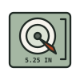
PCに入るハードディスク
5 MB／ドライブ
1980年 · Seagate ST-506／1983年 · Rodimeの3.5型
SeagateのST-506は、5.25インチのドライブに5 MBを収めました。Rodimeはさらに小さい3.5型を導入し、デスクトップPCで馴染みのある形へとつながります。
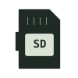
指先に載るメモリーカード
8 MB／カード1枚
1998年 · Memory Stick発売／2000年 · 初期SD登場
初期のSDカードは8 MB。ソニーのメモリースティックも4 MBと8 MBで登場しました。カードを差し替えれば、デジタルカメラなどで記録する場所を手軽に増やせます。
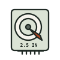
ノートPCへの2.5型HDD
20 MB／ドライブ
1988年 · PrairieTek 220登場
PrairieTek 220は2.5インチのハードディスク。20 MBの記憶装置を小さく、軽くすることで、ハードディスクを持ち運ぶパソコンに収めやすくしました。
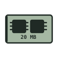
回転しない20 MB
20 MB／ドライブ
1991年 · SunDiskがIBM向けに納入
SunDiskはIBM向けに20 MBのフラッシュSSDを納入しました。前の2.5型HDDと容量は同じ。磁気ディスクとヘッドを半導体に置き換えた例です。
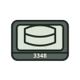
密閉型HDDへの転換点
35 MB／モジュール
1973年 · IBM 3340／3348導入
IBMのWinchester方式は、ディスクとヘッドをまとめたモジュールを採用。35 MB版と70 MB版がありました。小さな間隔でヘッドを動かす技術は、後のHDDにつながります。
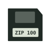
フロッピーの先にあったZip
100 MB／ディスク
1994年 · Iomega Zip発表
Zipは厚みのある交換式メディアに100 MBを収めました。複数枚のフロッピーに分けていたファイルをまとめて持ち運ぶ用途に使われました。
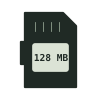
デジカメのカードが競った128 MB
128 MB／カード1枚
2001年 · 128 MBのSDとスマートメディア／2002年 · xD登場
SDに128 MBの製品が登場した頃、デジタルカメラ向けには同じ容量のスマートメディア、コンパクトフラッシュ（CF）、xDピクチャーカードもありました。使えるカードはカメラによって異なりました。
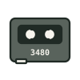
リールからカートリッジへ
200 MB／巻
1984年3月 · IBM 3480一般提供
初期の商用コンピューターでは、大きなリールに巻いた磁気テープも記憶装置でした。IBM 3480は1巻200 MBのテープを片手で扱えるカートリッジに収めました。
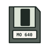
光と磁気で書き換えるMO
640 MB／3.5型ディスク
1988年 · 初期5.25型／1991年 · 3.5型／1997年 · 640 MBのISO規格
MOはレーザーで記録面を熱し、磁気でデータを書き込みます。3.5型640 MBの前後には128・230・540 MBがあり、大きい5.25型にも650 MB級、後のGIGAMOには1 GBを超える製品がありました。
CDで配るソフトウェア
681.984 MB／74分のCD-ROM
1982年 · 音楽CD／1985年 · CD-ROM研究発表／1988年 · ECMA初版
音楽のために広まったCDは、ソフトウェアの配布にも使われました。追記型のCD-Rと書き換え型のCD-RWも普及しました。
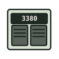
GBに届いた業務用HDD
2.52 GB／ユニット
1980年 · IBM 3380発表
IBM 3380は大型コンピューター向けのディスク装置。ディスクとヘッドを組み合わせた装置を2基搭載し、1ユニットで2.52 GBを収めました。
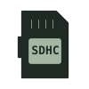
2 GBの壁を越えたSDHC
4 GB／カード1枚
2006年 · SDHC規格登場／2007年 · 東芝の4 GB製品発表
SDHCは従来のSDの上限だった2 GBを超え、規格上は32 GBまで対応します。東芝は4 GBのSDHCと小型のminiSDHCを発表。同じ4 GBのメモリースティック PRO デュオは、ソニーがデジタルカメラやPSP向けに発売しました。
片面1層のDVD
4.7 GB／片面1層
1997年 · DVD-ROMのECMA規格初版
DVDはCDと似た外形のまま、より細かくデータを記録します。DVD-R・DVD+Rの追記型、RWやDVD-RAMの書き換え型にも、DVD-ROMと同じ容量帯の規格がありました。
記憶セルを積み上げる
16 GiB／チップ
2013年 · Samsung初代V-NAND量産発表
Samsungの初代V-NANDは、記憶セルを24層に積み重ね、チップ1個で128 Gbitを記憶できました。東芝は2007年に3D技術を発表し、2015年には48層のBiCSを発表しています。
青紫色のレーザーで25 GB
25 GB／片面1層
2002年 · 基本仕様発表／2006年 · BD-ROM米国量産発表
Blu-ray Discは、DVDより波長の短い青紫色のレーザーで細かい記録を読み取ります。25 GBは1層の代表容量で、BD-ROMのほかBD-R・BD-REにもあり、2層の50 GBへと広がりました。
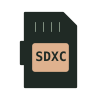
SDXCのカードに64 GB
64 GB／カード1枚
2009年 · SDXC規格策定／2010年 · 東芝の64 GB製品発売
SDXCはSDHCの上限だった32 GBを超え、規格上は2 TBまで対応します。東芝の64 GB品は、HD動画の撮影や写真の高速連写を想定した製品でした。カメラ向けには、SanDiskのコンパクトフラッシュにも64 GB品がありました。
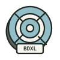
100 GBを超える光ディスク
100 GB／3層BD-R
2010年6月 · BDXL仕様確定
BDXLでは記録層をさらに増やし、3層のBD-RとBD-REで100 GB、4層のBD-Rで128 GBに達しました。
ハードディスクが1 TBに
1 TB／ドライブ
2007年1月 · Hitachi Deskstar 7K1000発表
Hitachiは3.5型のDeskstar 7K1000を発表しました。1台で1 TBを収めるHDDが、家庭用PCにも広がっていきます。
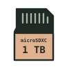
爪ほどのカードに1 TB
1 TB／カード1枚
2005年 · microSD規格登場／2019年 · SanDiskの1 TB製品発表
携帯電話向けに登場した初期のmicroSDは32～128 MBでした。2019年、SanDiskは1 TBのmicroSDXCを発表。2007年に登場した3.5型HDDと同じ容量が、爪ほどのカードに収まりました。
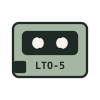
テープもTB級へ
1.5 TB／巻
2010年 · LTO Ultrium 5の規格・互換認証
第5世代のLTOではテープを区画に分ける機能が入り、LTFSによってファイル名を使ってテープ上のデータを扱えるようになりました。
国立国会図書館の図書を文字に
約11.37 TB／図書の文字
2025年度末 · 国立国会図書館の蔵書統計
国立国会図書館の図書は約1,263万点。収められた文字をすべてテキストにすると、約11.37 TBに相当します。
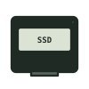
2.5型のSSDに15 TB超
15.36 TB／ドライブ
2016年3月 · Samsung PM1633a出荷発表
Samsungの業務用SSD、PM1633aは3D NANDを使い、2.5型に15.36 TBを収めました。初期のフラッシュSSDの20 MBと比べると、容量は76万倍以上です。
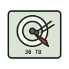
熱で記録密度を上げるHDD
30 TB／ドライブ
2024年1月 · SeagateがHAMR量産拡大を発表
HAMRはレーザーで記録面のごく小さな点を加熱して磁気を書き込みます。SeagateのExos Mには、1台で30 TBを収めるモデルがあります。
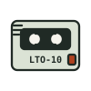
1巻に40 TBのテープ
40 TB／巻
2025年 · LTO-10仕様／2026年 · 40 TB媒体の発売告知
LTO-10には30 TBと40 TBのカートリッジがあります。1巻の容量は、LTOが登場した頃の100 GBから最大400倍になりました。
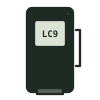
SSD1台に245.76 TB
245.76 TB／E3.Lドライブ
2025年7月 · KIOXIA LC9開発発表
KIOXIA LC9の245.76 TBモデルは、サーバー向けのE3.L形状に大容量のフラッシュを収めます。
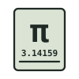
円周率314兆桁を文字で保存
314 TB／数字列
2025年 · 314兆桁を計算・発表
円周率を314兆桁まで計算した記録があります。その数字をテキストに並べるだけで314 TBになります。
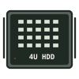
4UのHDDに2.5 PB
2.5 PB／4Uの1筐体
2023年11月 · Seagateが2.5 PB構成を発表
Seagate Exos CORVAULT 4U106は、高さ4Uの1筐体に磁気ディスクと冗長コントローラーを収めます。
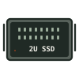
40台のSSDで約9.8 PB
9.8304 PB／2Uサーバー
2026年5月 · DellとKIOXIAが構成の実現を発表
先ほどの245.76 TBのSSD、KIOXIA LC9を40台搭載したのが、Dell PowerEdge R7725xdです。616 TBのHDD機とラック内で占める高さは同じで、容量は約16倍になります。
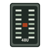
1筐体に80.64 PB
最大80.64 PB／48Uの1筐体
2024年 · 製品の一般提供／2026年 · LTO-10構成を確認
Quantum Scalar i7 RAPTORは、専用の48Uキャビネットに最大2,016巻を収めるテープライブラリーです。必要な巻をロボットが選び、ドライブに装填します。
Google検索の巨大な索引
100 PB超／検索索引
2026年11月 · Googleの公式解説を確認
本の巻末にある索引のように、Googleは数千億のウェブページなどを探す手がかりを整理しています。その検索索引だけで100 PBを大きく超えます。
NASAが蓄える地球の観測記録
128.56 PB／地球科学データの保存量
2024年9月末 · NASAの2024会計年度末
NASAは地球の大気や海洋、陸地を調べるための観測・解析データを保管しています。2024会計年度末に保管していたデータのうち、66.69 PBはクラウドにありました。
昔のウェブを開けるデジタル図書館
210 PB超／コレクションの保存量
2025年 · Internet Archiveの保存実績
過去のウェブページを閲覧できるWayback Machineは、2025年に1兆件の保存記録に達しました。運営するInternet Archiveは、電子書籍、映像、音声、ソフトウェアも保存しています。
粒子の衝突実験を1 EB分保存
1 EB／LHC実験データの保存量
2025年12月 · CERNが到達を発表
CERNは大型ハドロン衝突型加速器（LHC）の検出器から、分析に使う記録を選んで保存しています。15年以上かけて蓄えた実験データは1 EBに達し、その大半は磁気テープにあります。
45フレームを連ねるテープライブラリー
最大約2.2 EB／45フレーム
2026年 · LTO-10構成をメーカー仕様で確認
Spectra LogicのTFinity Plusは、筐体を連結してテープを保管する設備です。最大構成では、先ほどの80.64 PBのライブラリーと同じ40 TBのLTO-10テープを最大56,400巻収められます。
世界のインターネット通信、1日分
約25 EB／平均1日の通信量
2026年 · 国際電気通信連合（ITU）の推計
動画を見たり、写真を送ったりするたびにデータが流れます。世界の固定回線とモバイル回線を通じた利用者向けのインターネット通信を合計すると、平均1日で約25 EBになります。
Seagateが1年に出荷したHDD
789 EB／1会計年度の出荷容量
2026会計年度 · 2026年7月3日終了
Seagateが2026会計年度に出荷したHDDの容量を足すと、789 EBになります。容量の約9割は、クラウドや企業のデータセンターで使われるニアラインHDDが占めました。
出荷の累計がゼタバイト級に
4 ZB超／創業以来の出荷容量
2025年7月 · Seagateの累計出荷発表
1 ZBは1,000 EBです。Seagateが2025年7月までに出荷した記憶装置の容量は、創業以来の累計で4 ZBを超えました。
世界に設置された記憶容量
約13 ZB／世界の設備容量
2026年 · IDC Global StorageSphere
家庭や企業、データセンターにある記憶媒体の容量は、世界で合計どれくらいになるのでしょうか。IDCは、使っている領域と空き領域を合わせ、2026年は約13 ZBと推計しています。
世界で1年に生まれ、複製されるデータ
約218 ZB／1年分の生成・複製など
2025年のデータ量 · IDCの2026年6月版推計
撮影や観測で新しいデータが生まれ、配信やバックアップでコピーが作られます。IDCは、短時間で消えるデータも含め、2025年に世界で生成・取得・複製・消費されたデータを約218 ZBと推計しています。